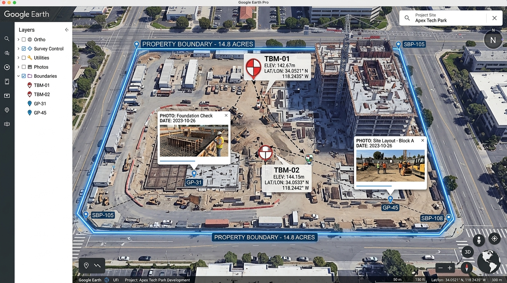

Turn raw CSV, total station exports, and Excel benchmark tables into rich 3D Google Earth Placemarks, boundary polygons, and geotagged photo reports. Powered by 6,864 national EPSG grids — 100% offline on your machine.

Excel to KML Pro eliminates tedious coordinate conversion errors. Designed specifically for construction site benchmarks, infrastructure surveys, boundary traverses, and drone operations.
Search by country, EPSG code, or AutoCAD drawing code (e.g. DUB-DLTM, DUB-OLD40, OSGB36). Every projection family is supported with automated 3-parameter and 7-parameter datum shift onto WGS84.
Everything runs purely on your workstation inside the Windows Edge WebView2 engine. No survey benchmarks, defense projects, or confidential site coordinates are ever transmitted to any cloud or remote server.
Paste rows straight from Excel or drag-and-drop raw total station CSV files. Automatically recognises column aliases (Easting, E, X, Level, RL, Z) or reads position-based dumps with no headers.
Fit a local project site grid onto national control with multi-point least-squares calibration. Calculates shift, rotation in seconds, and scale in PPM, displaying residual errors on every control point.
Attach site inspection photos matching point names or coordinate tags. Automatically bundles the pictures directly inside a portable .kmz file, displaying high-res photos inside Google Earth popup balloons.
Connect points by feature code or sequential run. Automatically closes shapes to compute exact ground perimeter length and ellipsoidal surface area in square metres (m²) and hectares (ha).
No complicated CAD export setups or paid GIS subscriptions. Follow these 3 intuitive steps.
Copy and paste rows straight from Excel, drag-and-drop a CSV file, or type points by hand with auto-incrementing station IDs (TBM-01 → TBM-02).
Type your country or AutoCAD zone code (e.g. DUB-DLTM, UTM 40N, British Grid). Check your known benchmark with the integrated prover tool.
Press Save KML or Save KMZ. Open the generated file in Google Earth, Google Earth Pro, or GIS apps for instant 3D inspection.
Get the official release for Windows. Lightweight, native, and completely free to use.
Runs directly in any modern browser on macOS, Linux, ChromeOS, and Windows. Same full EPSG coordinate engine.
Launch Web Tool →Single standalone executable. Copy to a thumb drive and run directly on any field laptop without administrator privileges.
View Releases on GitHub →Android APK and iOS Progressive Web App (PWA). Add to home screen in Safari or Chrome for offline surveying in the field.
Mobile Build Instructions →Standardized geodetic math formulas, projection definitions, and supported field instrument formats.
| Category | Specifications & Supported Standards |
|---|---|
| Supported Input Formats |
CSV (Comma-Separated)
TSV (Tab-Separated)
Space-Delimited TXT
Direct Excel Paste
Total Station Raw Exports
Auto-detects header row or position order (Point, Easting, Northing, Elevation, Code). |
| Supported Output Formats | KML 2.2 Standard KMZ Compressed Archive Interactive HTML Survey Balloon GeoJSON Compatible Elements |
| Geodetic Projections | Transverse Mercator, Universal Transverse Mercator (UTM 1–60 N/S), Lambert Conformal Conic (1SP & 2SP), Oblique Mercator, Cassini-Soldner, Stereographic, Krovak, Albers Equal Area, and National Custom Grids. |
| Ellipsoids & Datums | WGS84, ETRS89, GDA94/GDA2020, NAD83, ED50, Clarke 1880, Airy 1830, Bessel 1841, Everest 1830, Hayford 1909, Qatar National Datum (QND95), DLTM, and 1,000+ local historical datums. |
| Datum Shift Models | Automated 7-parameter Helmert (Bursa-Wolf) transformation, 3-parameter Molodensky shifts, and custom 2D site calibration from local control points. |
| Client Engine & Security | Microsoft Edge WebView2 (Chromium 120+ based) with Go wrapper. 0 MB network egress for conversions, air-gapped security, zero external telemetry. |
Everything you need to know about coordinate accuracy, offline privacy, and file compatibility.
DUB-DLTM is Dubai Local Transverse Mercator (EPSG:3997), and DUB-OLD40 is Old Dubai on UTM Zone 40 (EPSG:27040). You can type those exact CAD codes straight into the grid search box in Excel to KML Pro, and a yellow CAD badge will confirm the match.
Download Excel to KML Pro (v3.5.3) for Windows or try the full web app directly in your browser. Fast, accurate, and completely free.